DEFINE
From the information we gathered over three weeks, we defined key insights to help guide our design process.
Insight #1
The district has experience systemic structural change recently which
has added challenging complexity. Our solution must be flexible and sustainable to work.
“There have been a lot of changes in the last few years. This district is in real transition
and not everyone is on board with any initiative.”
– English Teacher
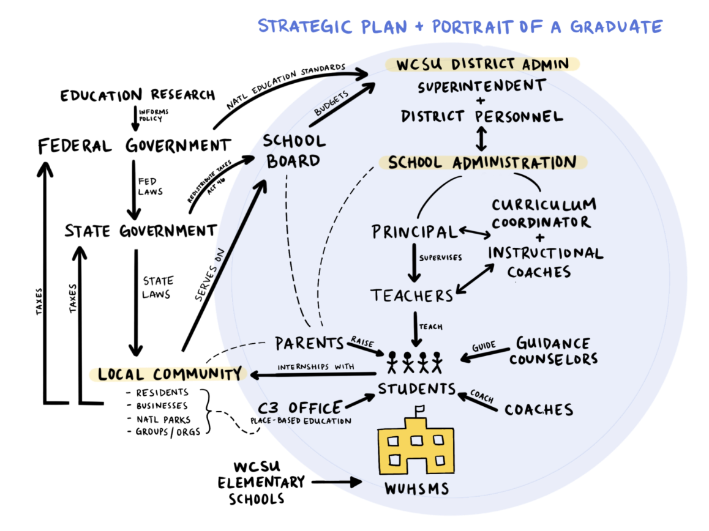
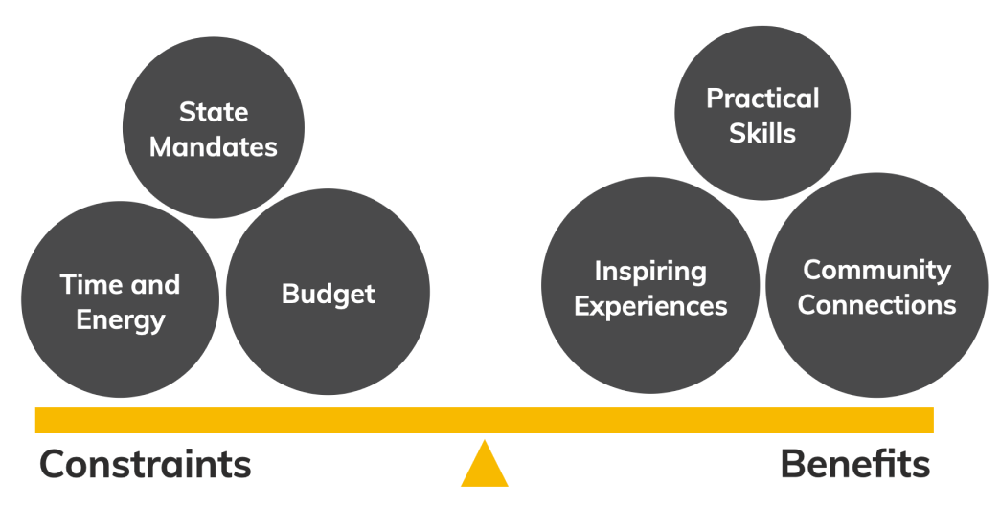
Insight #2
Teachers already juggle several responsibilities and lack available time to accomplish everything
they'd like to. A new initative would have to justify the use of limited resources.
“We have a lot of great ideas, but it’s scary to implement something new because you don’t want to put students
at a disadvantage for standardized tests.”
– Math Teacher and Academic Coach
Insight #3
Students feel a greater sense of urgency, pride and ownership over their education when their work is
shared with the greater community. Our solution should strive to promote communtiy visibility.
“There’s a huge need for school and community partnerships. It helps students to see how the community functions and shows the community how the schools are preparing students to be worthwhile community members.”
– Music Teacher and Parent
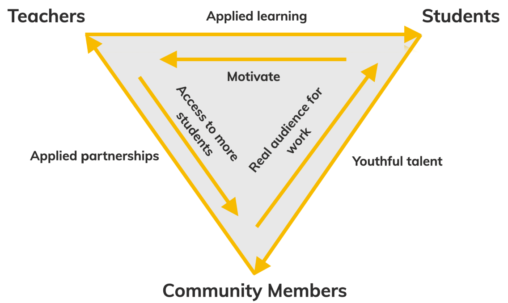
REFRAMED CHALLENGE
From our research, we determined that the externship program proposal would be uneffective because of limited time resources and teacher skepticism of the benefits. After presenting our findings to the client, we worked together to reframe the challenge:
Design a digital experience that enhances education and promotes collaboration through community-wide visibility.
IDEATE
With our new challenge in mind, we dove back into our insights and research. We conducted some additional research and went to the whiteboard to ideate potential solutions.
Our favorite idea was an online portfolio system.
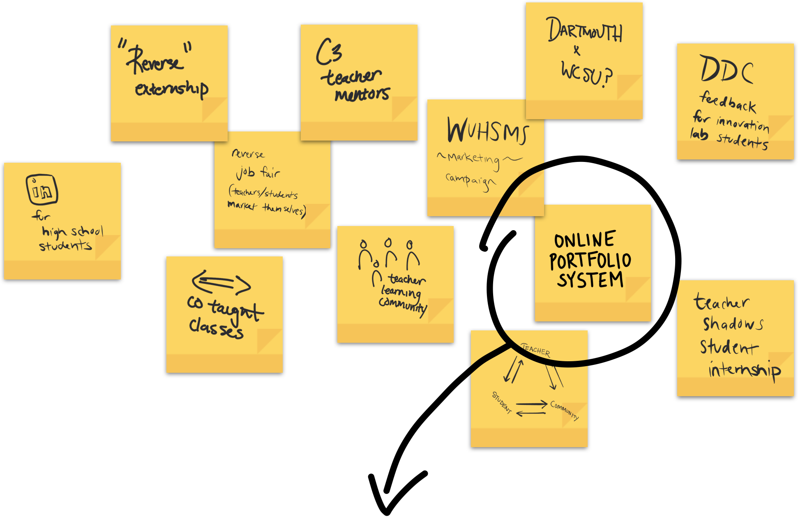
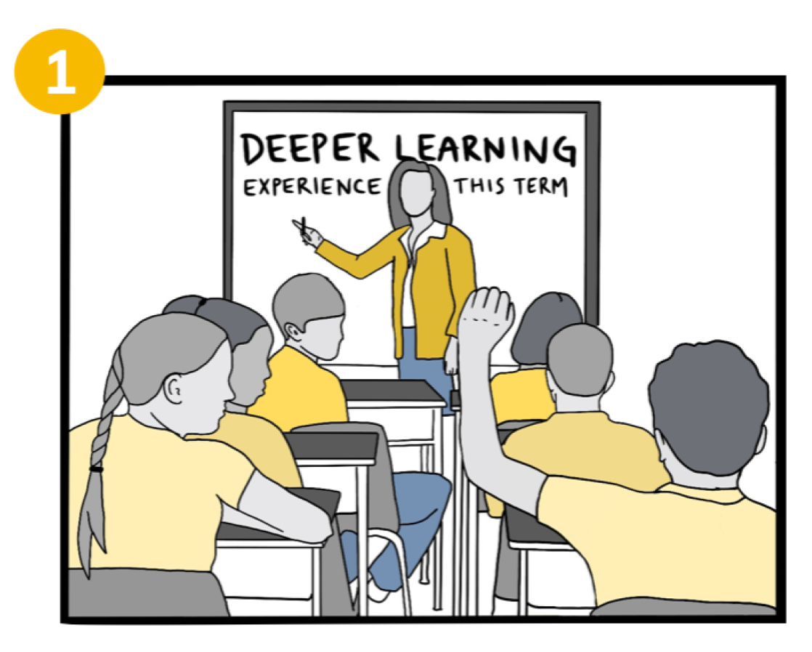
Mrs. Pearlman, a 10th grade social studies teacher, presents her class with a deeper
learning experience exploring and modeling modern architecture.
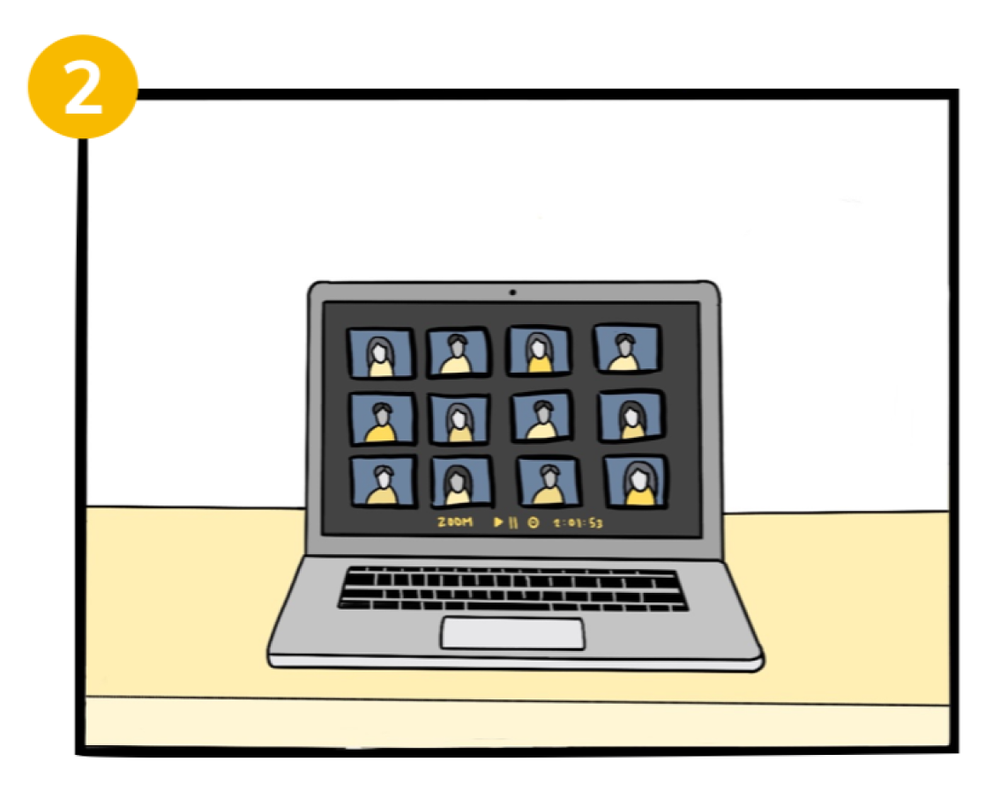
If she is teaching remotely, she can also present this lesson online over a Zoom class.
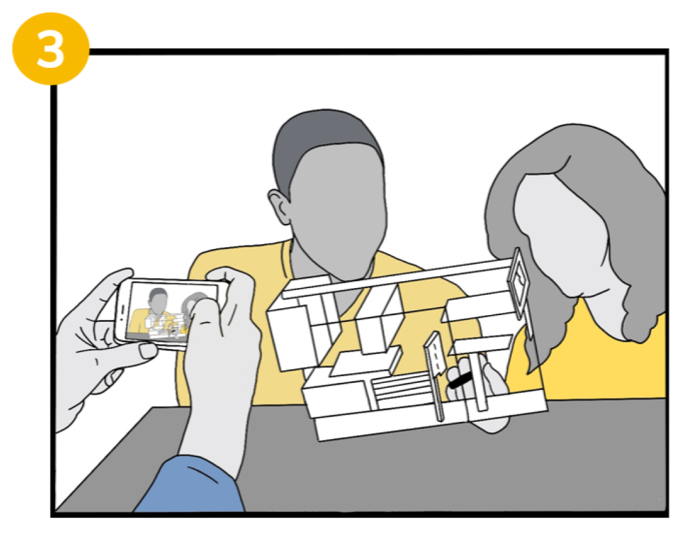
Mrs. Pearlman's class spends the term learning, creating, and documenting their process.
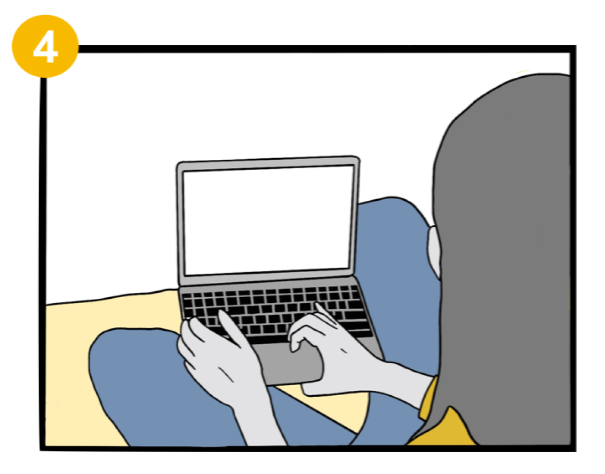
The students use that documentation to create portfolios, showcasing their work
in an online platform that can be shared with the whole community.
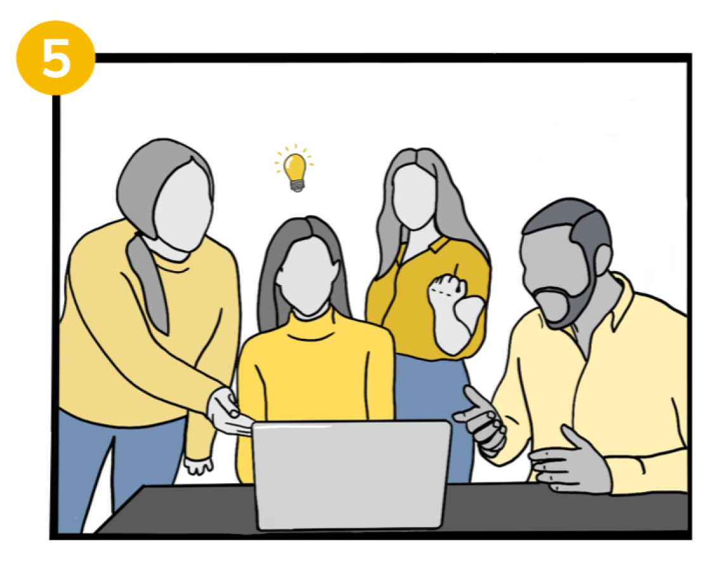
The community is now able to see and engage with student work. They can praise
students and teachers for their progress and be inspired by finished projects.
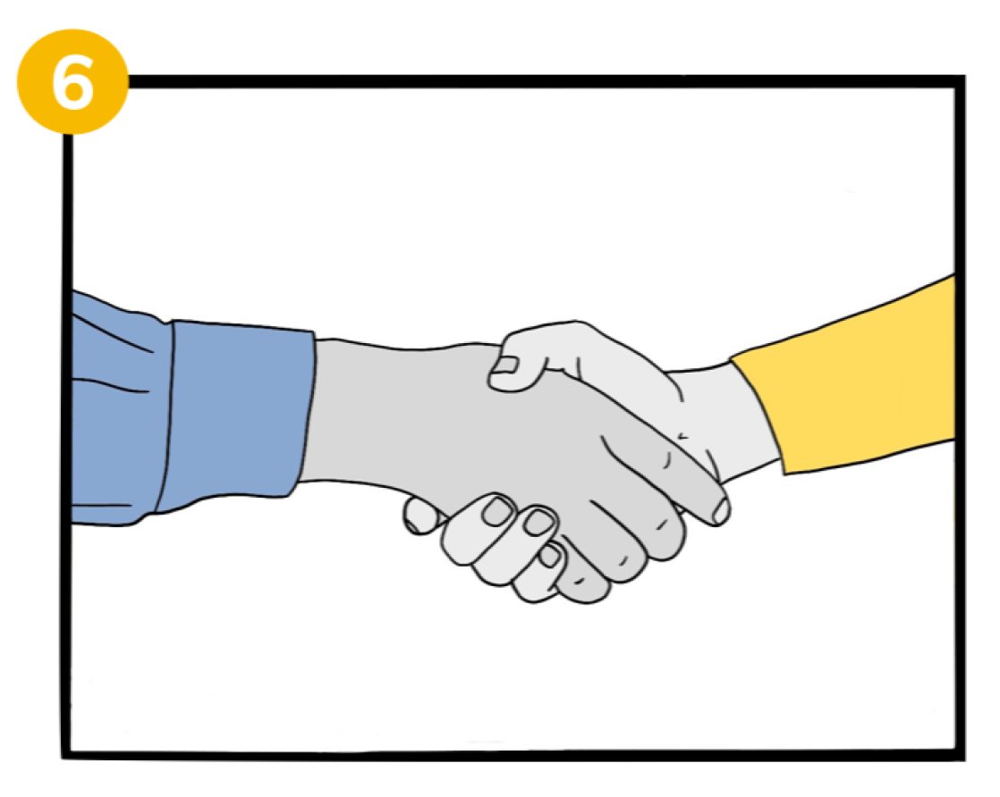
A local architecture firm sees the class' work and reaches out to partner with
Mrs. Pearlman to connect her students with real-world architecture experience.
PROTOTYPE
To prototype our online portfolio system, we used the bloging website Medium because of its
simplicity and low barrier to entry. Then, we created sample portfolios for fictional individual students and classroom projects.
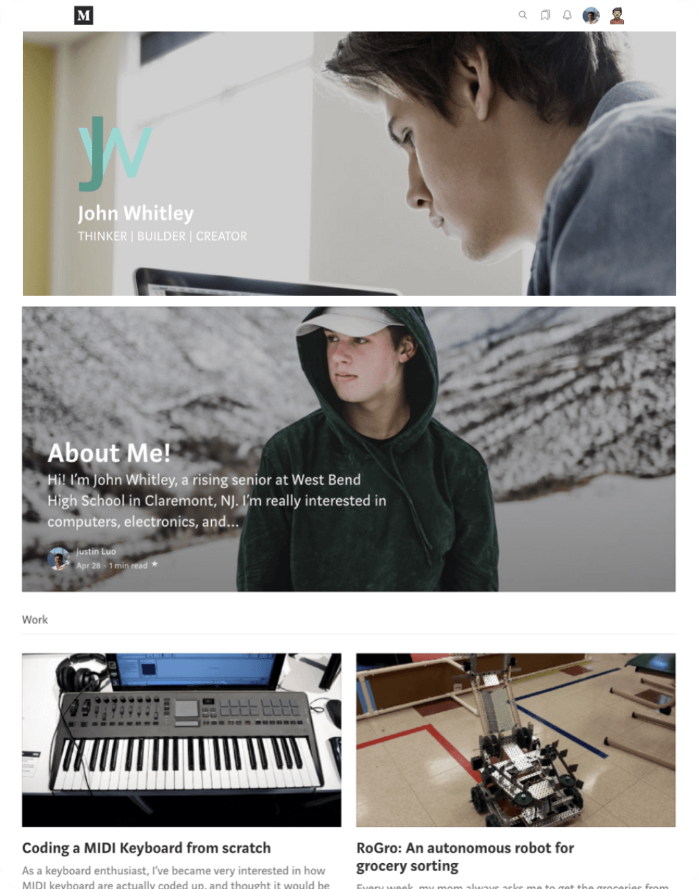
Mock student portfolio
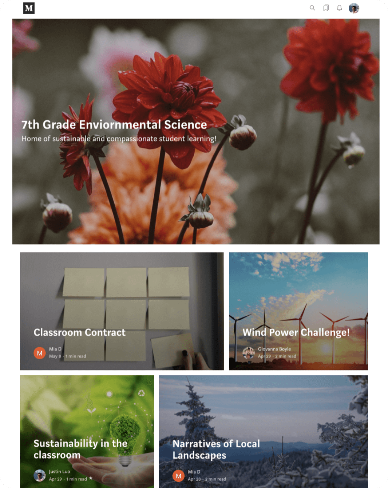
Mock class portfolio
SUMMARY
Our proposed solution meets the project requirements and insights:
Flexible and sustainable (digital and applicable to various scenarios)
Low barrier to entry (simple + free)
Emphasizes community engagement
Works in remote and hybrid education scenarios
We presented our project in June 2020 and shared our work through a digital project board and detailed project report. See more below.
In the future, we hope that Digital Hallways will be used to help influence school and community members to contribute towards a larger conversation to
provide students with deeper and more meaningful experiences both in and out of the classroom.